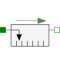
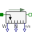
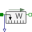
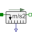
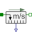
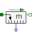

PartialRelativeSensorDevice to measure a single relative variable between two flanges |

|
This information is part of the Modelica Standard Library maintained by the Modelica Association.
This is a superclass for 1D translational components with two rigidly connected flanges and one output signal in order to measure relative kinematic quantities between the two flanges or the cut-force in the flange and to provide the measured signal as output signal for further processing with the Modelica.Blocks blocks.
|  |
Modelica.Mechanics.Translational.Sensors Ideal sensor to measure the absolute velocity, force and power between two flanges |
|  |
Modelica.Mechanics.Translational.Sensors Ideal sensor to measure the power between two flanges (= flange_a.f*der(flange_a.s)) |
|
Modelica.Mechanics.Translational.Sensors Ideal sensor to measure the force between two flanges |
|
|  |
Modelica.Mechanics.Translational.Sensors Ideal sensor to measure the relative acceleration |
|  |
Modelica.Mechanics.Translational.Sensors Ideal sensor to measure the relative speed |
|  |
Modelica.Mechanics.Translational.Sensors Ideal sensor to measure the relative position |